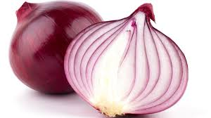

Onion

An onion ( Allium cepa) is a widely cultivated, herbaceous biennial plant in the amaryllis family (Amaryllidaceae) known for its pungent, edible bulb, which is a staple in cuisines
worldwide, and is closely related to garlic, chives, and leeks.